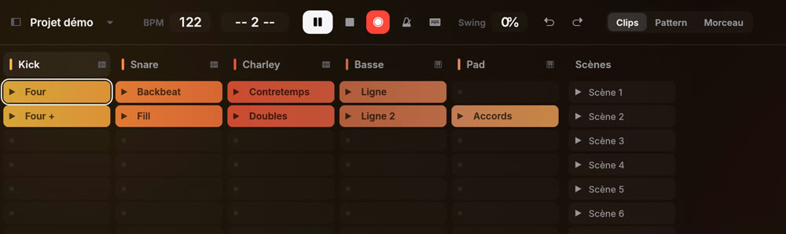
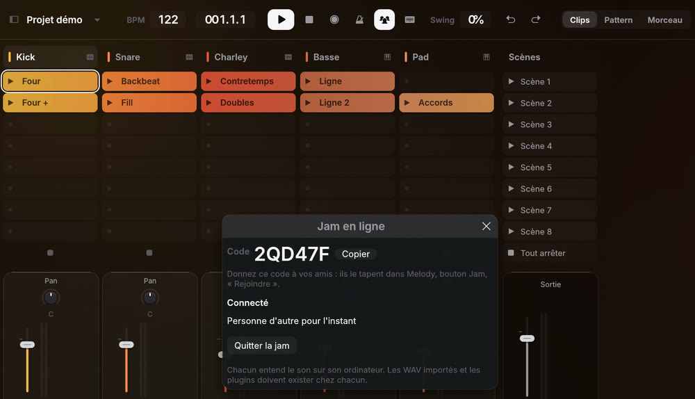
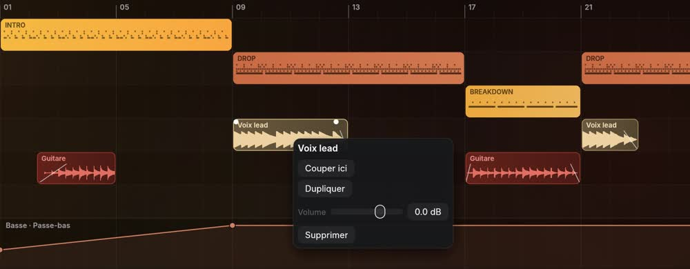
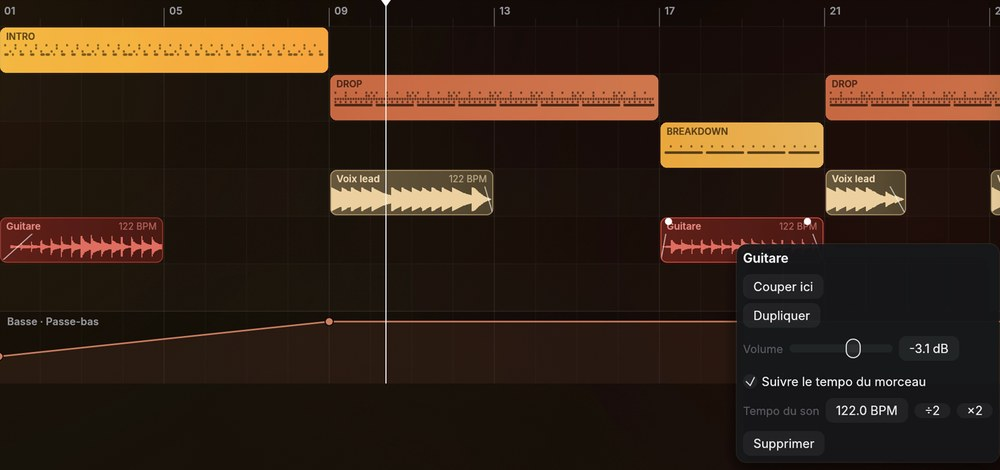
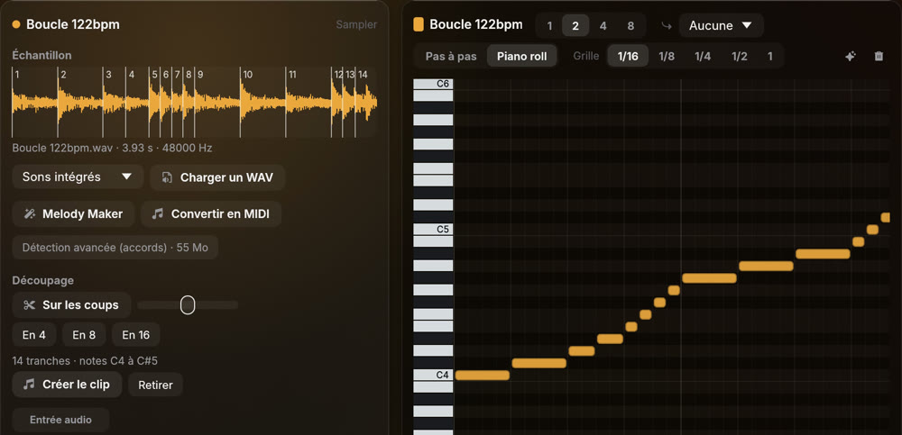
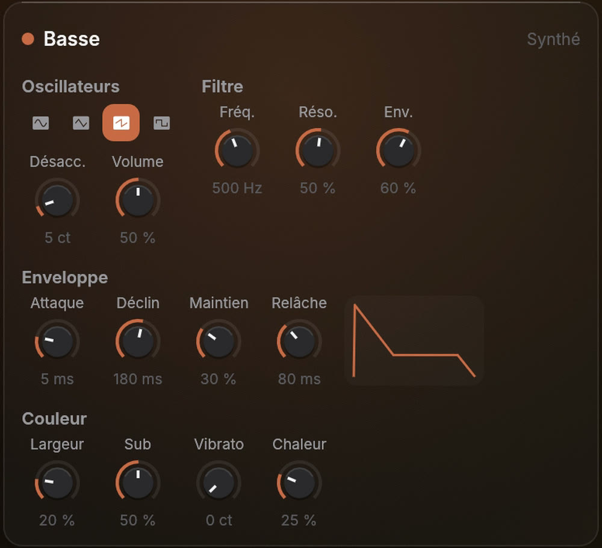
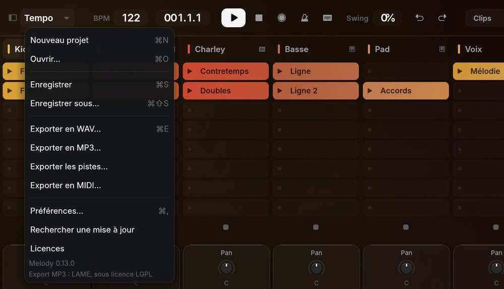

Harmoniser
À partir de votre mélodie, Melody propose les accords, puis la basse et la batterie qui vont avec.
Composer, jouer, arranger, mixer. Voici ce que Melody sait faire aujourd'hui, et chaque mise à jour en ajoute.
Partez d'un fredonnement, d'une suite d'accords ou d'une page blanche.

Chantez quand l'idée vous vient. Melody écoute, trouve les notes et les écrit en MIDI, prêtes à être jouées par n'importe quel instrument.
À partir de votre mélodie, Melody propose les accords, puis la basse et la batterie qui vont avec.

Une batterie, une basse, des accords ou une mélodie, générés dans la tonalité de votre choix.

Un enregistrement de voix ou d'instrument devient des notes que vous pouvez modifier.

Cliquez sur les cases, le beat joue. Humanisez la force des coups pour un jeu plus vivant.
Melody est pensée pour la scène autant que pour le studio.

Lancez vos clips, enchaînez les scènes et improvisez. Les actions de suivi enchaînent les clips toutes seules.

Votre clavier MIDI, ou celui de l'ordinateur, directement dans vos clips.

Une mesure de clics avant d'enregistrer, le temps de vous préparer.

Composez ensemble sur le même morceau, en direct. Pas de compte : un code suffit.
Du pattern au morceau, avec vos sons et vos prises.

Posez vos patterns dans la Playlist et construisez intro, couplets et refrains, section par section.

Posez vos enregistrements dans la Playlist, coupez-les, ajoutez des fondus.

Vos sons suivent le BPM du morceau, sans changer de hauteur.

Melody découpe votre boucle sur les coups. Rejouez chaque tranche au clavier.

Automatisez n'importe quel réglage, plugins compris.
Un son ample dès le départ, et tous les outils pour le régler.

Une console complète : volume, panoramique, effets et vumètres sur chaque piste, et un limiteur en sortie.

Batterie intégrée, synthé stéréo avec Largeur, Sub, Vibrato et Chaleur.

Sidechain intégré, sur n'importe quelle piste.

Vos instruments et effets VST3 et CLAP, et des plugins gratuits à installer en un clic.

Exportez en WAV, en MP3, en MIDI ou piste par piste.

Le même studio, sur votre ordinateur. Et une démo complète dans le navigateur, sans rien installer.